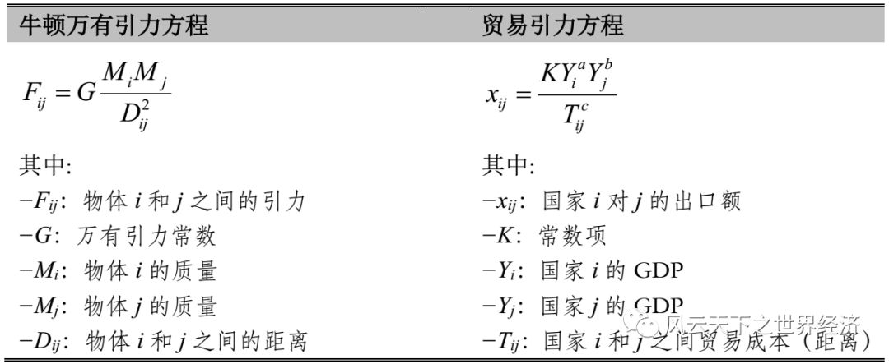
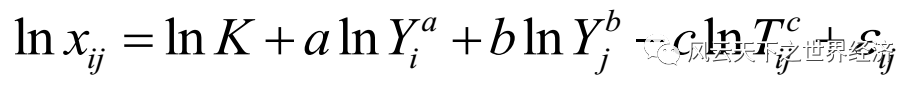

No.1
出走物理学王国
1962年的初春，一位约莫60岁的荷兰老人历经长途跋涉，终于穿过物理学王国高高的圆形拱门。
他步履轻盈且目光深邃，满头的银发折射着智者的锋芒。
几乎没有人留意这个衣着朴素的旅人。
但在遥远的经济学王国，几乎所有的臣民几乎一眼就可以认出他来，他就是经济计量学的大师简·丁伯根。
物理学王国其实是他的故乡。
33年前，在气势恢宏的莱顿宫正殿，他被授予了物理学博士学位。也是在那一年，他离开了这个生活了26年的家乡，辗转数学王国，最终在经济学王国安顿下来。
利用自己丰厚的统计学知识，他白手起家，筑起一座叫做经济计量学的城堡，尽管这里不是经济学王国最繁华的一隅，但是也开始吸引越来越多的追随者。
在经济学的世界里，像丁伯根这样一路迤逦而来的旅人不在少数，这些学术移民大都来自物理学和数学王国。
这次重返物理学王国，丁伯根带着一个不为人知的重要使命。
随着二战结束之后，全球贸易规模的激增，他要找一个可以完美地能够预测双边贸易流量的工具，而寻遍整个经济学王国，没有一个工具是趁手的。
不但如此，经济学王国里地位显赫的贵族对他这份事业的漠然态度，让他感到深深的失望。
他决定回家乡寻找破解这一实证问题的灵感。
三十年过去了，物理学王国的街道已经不似旧日那般熟悉，彼时刚刚崭露头角的爱因斯坦和他的广义相对论还只是一片处女地；但如今，以此为基础的量子物理早已成为贵族们的日常，占据了物理学王国最核心的位置。
量子物理宫的穹顶下汇集了摩肩接踵的人群，热切的激辩之声让这里热闹非凡。最近，相对论大师惠勒提出一个叫黑洞的崭新名词让大家激动不已。
钱德拉塞卡做的黑洞微扰试验，让他得到了一些震撼人心的美之体验。
这里应该没有人愿意听一个老人讲来自经济学王国的故事吧，丁伯根嗫喏着。
那就去别的地方碰碰运气。
离开喧闹的量子物理宫，丁伯根一路向老城走去，这里的街景几乎和他离开的时候一模一样。
这老城区镌刻着丁伯根的童年，整个物理学王国的历史也是从这座城堡延伸开去的。
往日熙熙攘攘的大街上难见一个行人，一股破败之气弥漫在这个昔日的繁华之地。
蓦地，一个坐在经典力学宫门口的孩子吸引了丁伯根的注意，这种宫殿始建于1687年，出自物理学王国的最伟大的国王艾萨克牛顿之手。
落日余晖照在这个孩子的脸上，他深情落寞，但是却有着与他年龄不相称的坚毅目光。
他有一个时代标签式的名字——万有引力方程。
没错，他就是艾萨克·牛顿爵士遗落人间的后人。
尽管他身上有着高贵的血统，但是这注定是一个不属于他的时代。
这个时代是经典广义相对论的高光时刻，爱因斯坦斯坦方程才是人们的顶礼膜拜；其后，奇点定理和随之而来的黑洞四定律让彭罗斯、霍金、钱德拉塞卡，沃德、盖罗奇这些年轻的名字变得家喻户晓。
这个孩子让丁伯根想起了33年前出走物理学王国的自己，或许这个孩子会使他破解贸易流量的一把钥匙呢？
从物理学出走并在经济学打开一片天地也并非史无前例。早在几十年前，热力学第二定律就被植入了国际贸易的经典模型。
这次好运会不会再次降临呢？丁伯根决意带他踏上通往经济学王国的冒险之旅。
此时白昼渐逝，他们决定连夜返回经济学王国。
万家灯火寂然化为流萤，轻轻飘过了这一老一少星光花影的足踝。
No.2
最初的日子
穿过疆域辽阔的数学王国，丁伯根和引力方程很快就来到了经济学王国。
这是一个引力方程从未涉足的异域。
虽然与物理学王国的悠久历史相比，这个王国略显年轻。但是此时经济学王国也已经兴建近三百年，气势恢弘的宫殿鳞次栉比。
丁伯根所住的城堡位于国际经济学街区，是一个古典与现代高度融合的所在。
整个经济学王国的缔造者大卫休谟和亚当斯密就出生在这里，虽然三百年来经济学王国的领土急速膨胀，但是这里依然掌管着整个经济学王国的精神核心。
位于这个街区正中心的李嘉图城堡是一座哥特式的建筑，始建于1776年，在1817年经历了最大规模的扩建后成为现在的样子。
高耸入云的双塔设计让人不禁想起了德国的科隆大教堂。
尽管斑驳的外墙让他看上去有些颓势，但是由于这里供奉着亚当斯密和大卫李嘉图的骸骨，每日仍然吸引无数的朝拜者来到这里。
科隆大教堂
离李嘉图城堡不远处是一处相对较新的巴洛克风格的宫殿，建筑面积比李嘉图城堡要大许多倍。这个时代的最为显赫贵族瑞典人赫克歇尔、俄林就住在这里，而这座城堡也以这两个瑞典人的名字命名。
随着以萨缪尔森为代表的新晋贵族的入住，这里也成为时代标签新古典学派的大本营，一时风光无两。
除了这两个位于中心街区的城堡，丁伯根所修建的经济计量城堡略显偏僻，这里大都是一波从数学和物理学甚至历史学王国来的移民。
为了让引力方程看起来更像是经济学王国的臣民，丁伯根给他订做了一身专属经济学的外衣。但是他看起来还是和之前的样子差不多。

万有引力方程与贸易引力方程类比图
在最初的日子里，引力方程还保留着它在物理学王国的生活习惯，但是要用这个形式来估计两个经济体之间的流量，而不是物体之间的引力，经济学里的工具还无法直接做到，因为这个方程的非线性形式。
为此，丁伯根从数学王国请来了对数算子来帮忙，对数算子的魔术棒轻轻拂过了引力方程单薄的身体，神奇的一幕出现了，一个极易被最小二乘法估计的线性形式的引力方程横空出世：

对数线性化的引力方程
在计量经济学家看来，这个形式所呈现的简约之美力透纸背。
数据很快被导入引力方程的身体，片刻过后，结果完美让人不敢相信自己的眼睛：
a、b、c三个系数之和接近1；
估计的拟合优度高达0.8。
引力方程对于双边贸易流量迸发出惊人的预测力，在这之前，任何复杂的经济模型都没有刷过这个成绩，而引力方程只用了三个变量就做到了。
那一刻画面静止，如你所见，脚下有白云，头顶有蓝天。
气球盛开，五色斑斓。
成功的喜悦居于一切痛苦的过往之上。
但是喜悦总是短暂的，这个所谓的成功，在高居庙堂的贵族看来，不过风中的纸片。
大家只知道丁伯根从物理学王国领回一个叫引力方程的孩子，做着加工数据的蓝领工作，其他的他们一无所知，也不屑于知道。
处理数据的实证工作只是三流经济学家做的事。在萨缪尔森的倡导下，新古典国际贸易理论的数学化程度与日俱增，贵族们真正在意的是“逻辑之美”。
经济学俨然成为一门艺术，至于现实世界是什么样子的，who cares呢？
现实里充斥着各种失衡、不完美、无解和非均衡。而呈现在纸面的数学则是最美的。
引力方程虽然有着极高的工作效率，但是不是经由任何一个一般均衡系统推导出来，这就意味着它无法逆推至消费者和生产者的最优化行为。
这是那个时代经济学的大忌。
如果没有一个血统纯正的理论基础，引力方程的工作和买六合彩无异。
但是在国际经济学的街区里，几乎每天都可以看到这个孩子繁忙的身影，尽管他是如此勤奋，但是由于他不具备任何一个经典经济学模型的基因，大家还是把它称为无父无母的“孤儿”。
"Gravity model has an embarrassing poverty of theoretical foundation." 这是那个时代的学术贵族为引力方程贴的标签。
Embarrassing，这是压在引力方程稚嫩肩膀上的不能承受之轻。
这个形象让人不禁想起当红影视巨星道恩·强森，虽然是一个强力票房收割机，但是在同行看来，他不过是一个好莱坞善于举铁的肌肉小子，真正能够走入名人堂还需要些演技，而不仅仅是WWE的秀场。
在最初的几年了，引力方程在经济学王国一直重复着这样日子，也渐渐习惯了人们鄙夷的眼光。
他从未想过离开，因为这总比物理学王国里冷漠的眼神要温存许多。
7年后的瑞典斯德哥尔摩音乐厅，丁伯根凭借在经济计量学和宏观经济建模上的突出成就而加冕经济学王国里的至高荣誉——诺贝尔经济学奖。
掌声四起，王冠上的明珠闪着迫人的光芒，此刻的丁伯根也许再也记不起那个曾经被他带来的叫引力方程的孩子。
孤儿寻亲记：引力方程的故事 (下)，to be continued...
微信号 : lingnan511